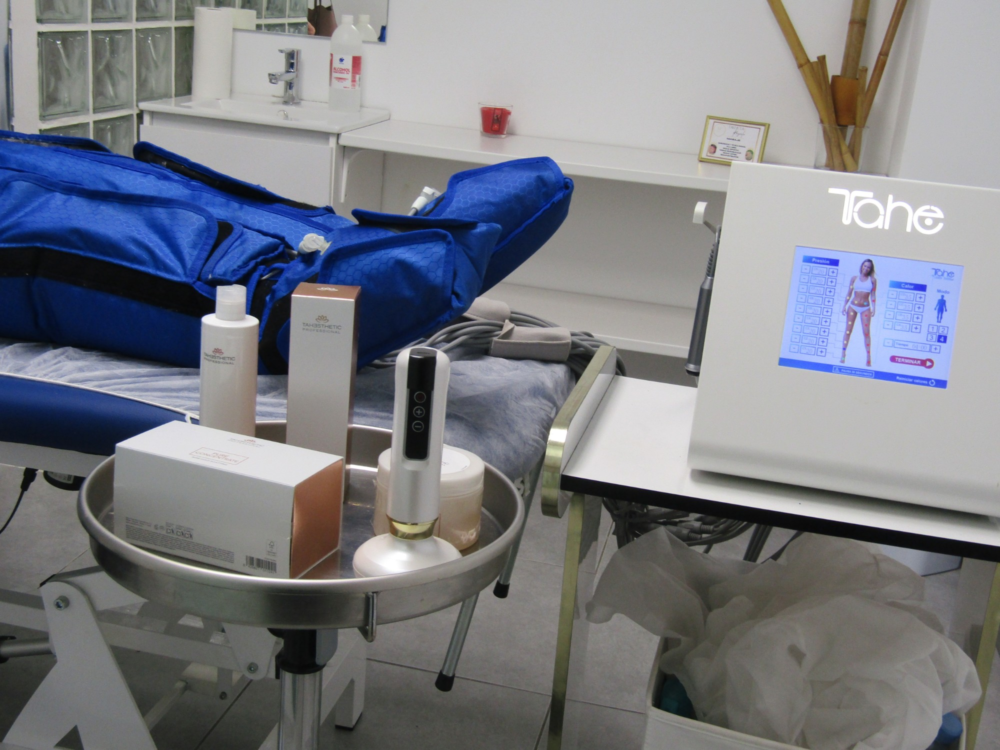
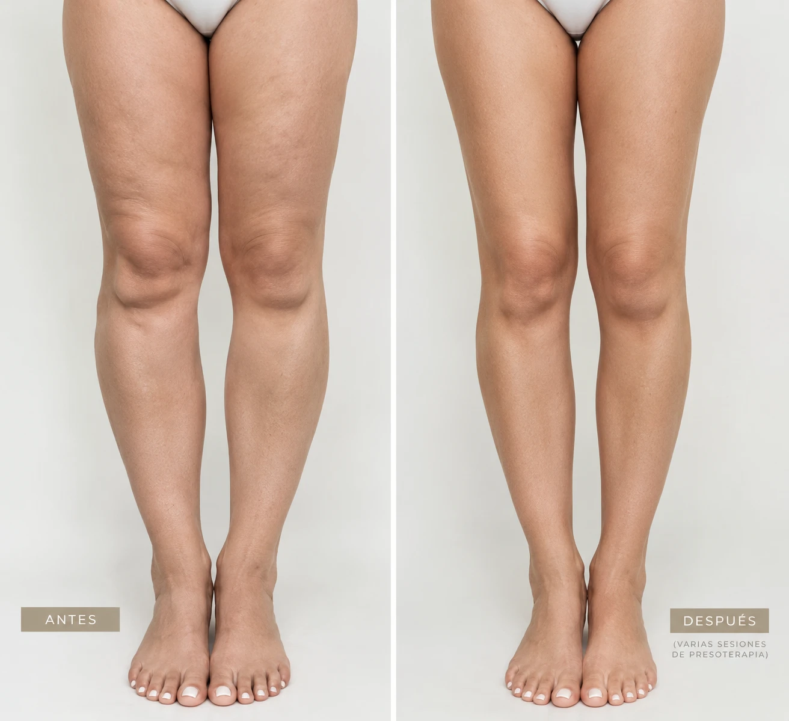
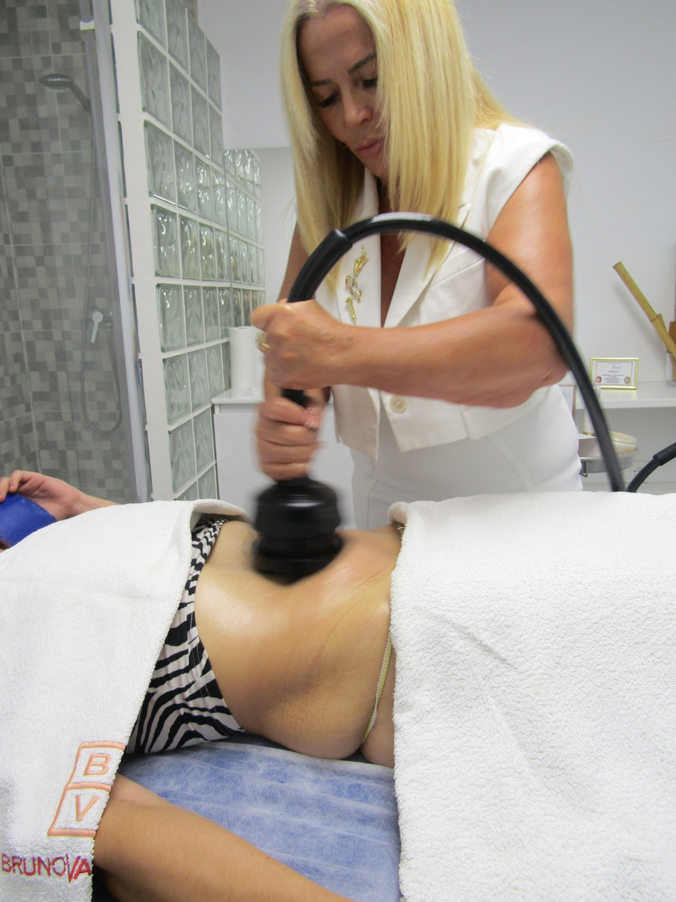

Quedan pocas semanas para las grandes citas navideñas, y es muy habitual que la báscula se resista a bajar. Los excesos del verano, el estrés de la rutina y la retención de líquidos suelen instalarse en zonas localizadas como el abdomen, los flancos y las cartucheras.
En la Clínica Médico Estética Alicia Forcada, situada en Almassora (Castellón), sabemos que a veces la fuerza de voluntad no es suficiente y el metabolismo necesita un impulso clínico real. Por eso, noviembre es el mes de la silueta: un programa integral diseñado para afinar tu contorno, desinflamar y reparar tu bajada de peso con total seguridad médica antes de las fiestas.
Tratamientos médico-estéticos para perder peso y afinar tu silueta en Almassora

Aparatología de presoterapia y modelado corporal en nuestra clínica de Almassora.
No existen los milagros genéricos, sino los tratamientos personalizados. En nuestra clínica combinamos la aparatología más avanzada con el seguimiento sanitario que necesitas para lograr resultados visibles y duraderos:
- Asesoramiento dietético y control por nuestra enfermera, Ana Sanchis: Un plan nutricional riguroso y adaptado a tu ritmo de vida. Además, si tu caso clínico lo requiere tras una valoración profesional, contamos con tratamientos de apoyo con GLP1 para regular la saciedad y facilitar la pérdida de peso de forma controlada y segura.
- Mesoterapia corporal: Infiltración de principios activos específicos directamente en la zona a tratar para disolver la grasa localizada más rebelde, mejorar la flacidez y estimular la microcirculación.
- Presoterapia médica: Un tratamiento clave para activar el sistema circulatorio, aliviar la pesadez de las piernas desde la primera sesión y redibujar el contorno corporal eliminando líquidos retenidos.
- Body Sculpting (Modelado corporal): Tecnología de vanguardia enfocada en remodelar la figura, tonificar los tejidos y combatir la flacidez cutánea que suele acompañar a la pérdida de peso.
- Tratamientos de masajes drenantes linfáticos: Técnicas manuales precisas diseñadas para movilizar las toxinas, descongestionar los tejidos y reducir de forma notable esa molesta sensación de "cuerpo hinchado" o abdomen inflamado.

Antes y después de varias sesiones de presoterapia: piernas más ligeras y menos retención de líquidos.
¿Por qué elegir la clínica médico estética Alicia Forcada en Almassora?

Tratamiento de modelado corporal en abdomen dentro del programa del mes de la silueta.
Elegir nuestro centro en Almassora significa ponerse en manos de profesionales cualificados que priorizan tu salud por encima de todo. A diferencia de los centros de estética convencional, nuestro enfoque médico-estético nos permite tratar el origen del estancamiento de peso:
- Diagnóstico previo individualizado: Analizamos tu composición corporal, tus hábitos y tus necesidades reales.
- Abordaje combinativo: Unimos nutrición, enfermería, aparatología y masajes para potenciar los resultados en tiempo récord.
- Proximidad y confianza: Cuidamos de ti en un entorno seguro, elegante y profesional muy cerca de Castellón.
¿Preparada para llegar ligera y radiante a Navidad?
No dejes que la retención de líquidos o los kilos de más empaquen tus fiestas. Ven a vernos a nuestra clínica en Almassora y diseña tu plan a medida para este Mes de la Silueta.
📲 ¿Quieres saber qué protocolo se adapta mejor a ti? Escríbenos o ven a visitarnos en Almassora (Castellón) y reserva tu primera valoración médica y corporal sin compromiso. ¡Recupera tu bienestar y tu figura hoy mismo!

.webp)